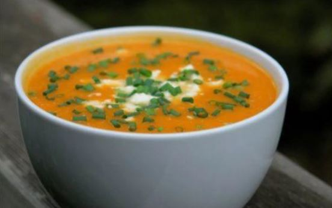

Sopa Crema de Calabaza
Las rosquitas glaseadas son ideales para acompañar el mate de la tarde. Se preparan a base de masa bomba, que forma una rosquitas huecas, crujientes por fuera. Esta es la receta de Mauricio Asta, para Oster.Las rosquitas glaseadas son ideales para acompañar el mate de la tarde. Se preparan a base de masa bomba, que forma una rosquitas huecas, crujientes por fuera. Esta es la receta de Mauricio Asta, para Oster. Las rosquitas glaseadas son ideales para acompañar el mate de la tarde. Se preparan a base de masa bomba, que forma una rosquitas huecas, crujientes por fuera. Esta es la receta de Mauricio Asta, para Oster.